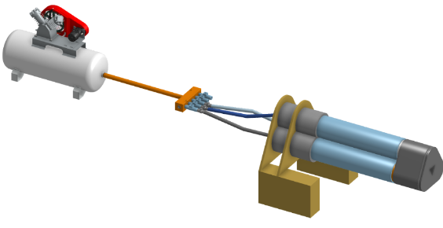
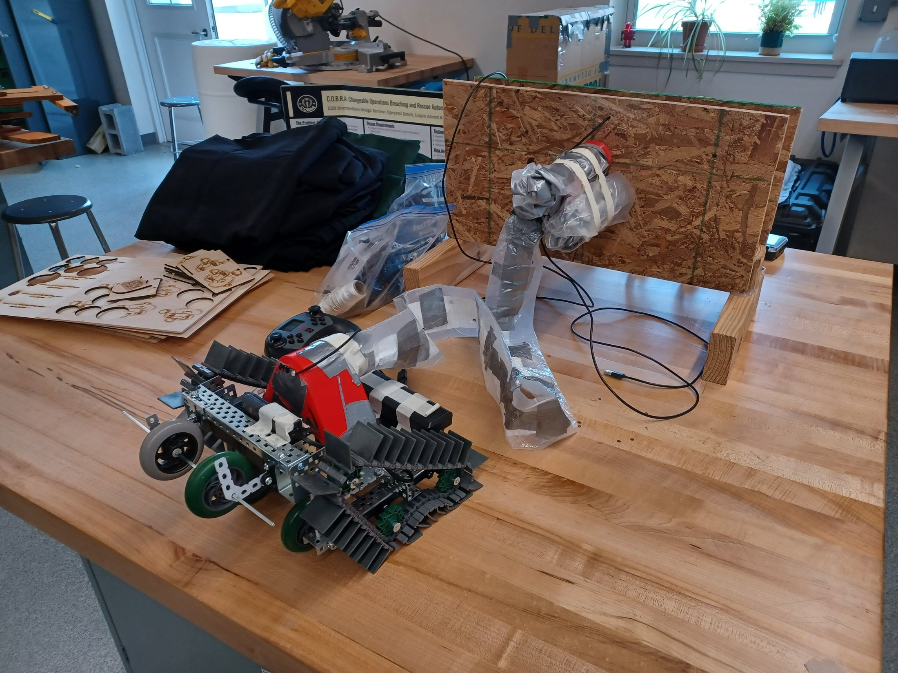
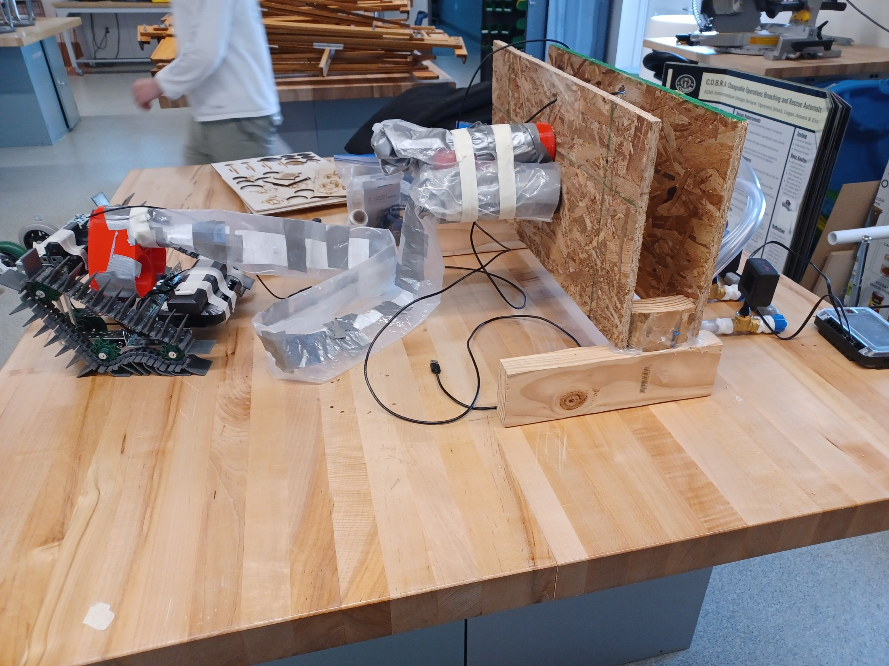
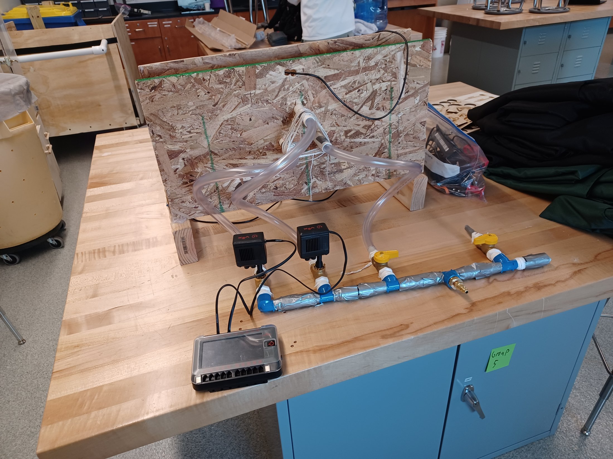
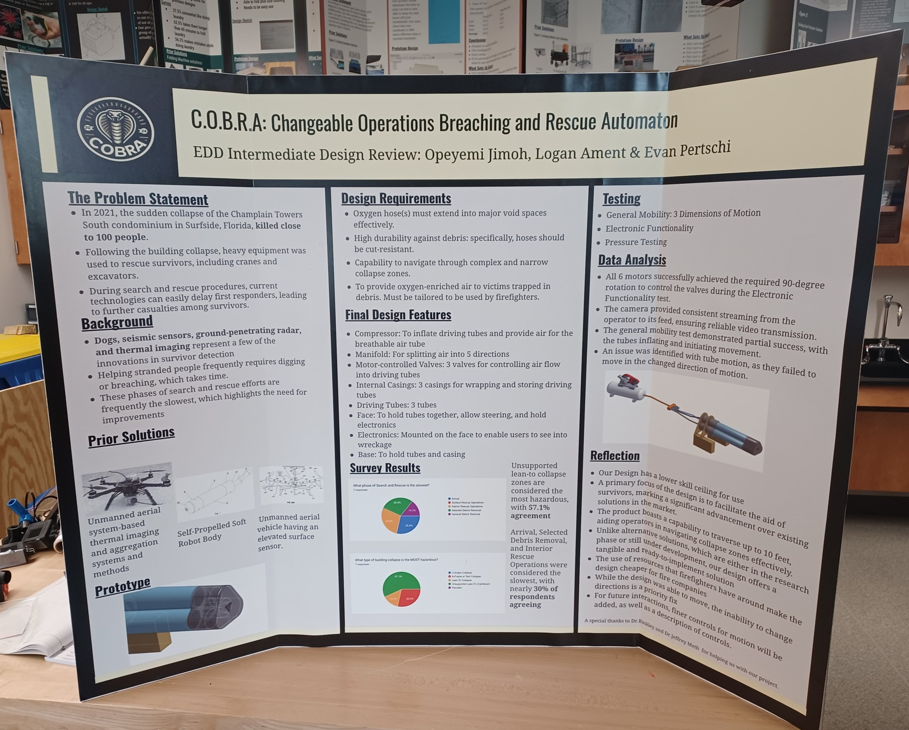

C.O.B.R.A.
- Jan to Dec 2024
- Team of 3
- Intermediate design review
Overview
C.O.B.R.A. stands for Changeable Operations Breaching and Rescue Automaton. It is a pneumatically powered soft robot built for search and rescue in collapsed buildings. It also suits urban search and rescue more broadly.
One operator controls it with a handheld controller. The robot slithers through its surroundings and delivers oxygen-enriched air to trapped survivors. An air compressor powers it. A secondary robot can be added to help it get past terrain obstacles.
The idea came from the 2021 collapse of the Champlain Towers South condominium in Surfside, Florida. That collapse killed close to 100 people. Firefighters are the intended users.

Why it matters
After the 2021 Surfside collapse, rescuers relied on heavy equipment to reach survivors, and that takes time. C.O.B.R.A. explores a way to get air to trapped people sooner, using a tool a firefighter can operate and that is affordable.
Background
Rescue efforts at Surfside relied on heavy equipment like cranes and excavators. Current search and rescue technology can still delay first responders once that equipment is involved.
Dogs, seismic sensors, ground-penetrating radar, and thermal imaging are a few of the existing innovations in survivor detection. Helping stranded people still often requires digging or breaching, which takes time. These phases of search and rescue are frequently the slowest, which highlights the need for improvement.
Design requirements
- Oxygen hose(s) that extend effectively into major void spaces
- High durability against debris, including cut-resistant hoses
- Ability to navigate complex, narrow collapse zones
- Delivery of oxygen-enriched air to victims trapped in debris, built for use by firefighters

How


The final design centers on a set of motor-controlled tubes that push into collapse zones and deliver air.
- A compressor inflates the driving tubes and supplies the breathable air tube
- A manifold splits air into 5 directions
- 3 motor-controlled valves manage airflow into the driving tubes
- 3 internal casings wrap and store the driving tubes
- 3 driving tubes reach into the voids
- A face piece holds the tubes together, allows steering, and houses the electronics
- Electronics mounted on the face give the operator a view into the wreckage
- A base holds the tubes and casing
To help prioritize these features, we ran a small survey with 7 respondents. Unsupported lean-to collapses were seen as the most hazardous type of building collapse, with 57.1% agreement. Arrival, selected debris removal, and interior rescue operations were seen as the slowest phases of search and rescue, with nearly 30% agreement.
Results
- All 6 motors achieved the required 90-degree rotation to control the valves during the electronic functionality test.
- The camera gave consistent, reliable video streaming from the device to the operator.
- General mobility testing showed partial success. The tubes inflated and began moving, but couldn't redirect once a direction change was needed.

- The design aims for a lower skill ceiling than existing approaches, so it's easier to pick up and use.
- The main focus is aiding survivors, which the team sees as an advance over current market solutions.
- The device can traverse up to 10 feet, helping operators navigate through collapse zones.
- Unlike alternatives still in research or development, this design is tangible and ready to implement.
- Using accessible, low-cost resources helps keep it affordable for fire departments.
- The inability to redirect motion is the top priority fix. Future work will add finer motion controls and clearer documentation of how the controls work.